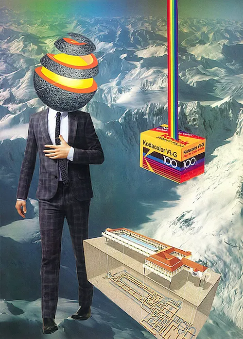

LetsCollage
People Don't Know What to Expect: An Interview with Collage Artist Jesse Treece
This interview was conducted via email by Kevin Sampsell, for NAILED.

There are few things as heart-thumping and brain-spinning as new creative obsessions. Like the sensation of falling in love, your day is spent daydreaming about this specific obsession, nearly hyperventilating at the thought of your next immersed moments with it. I grew up geeking out on music until I was 21, when I suddenly became a literature fanatic, living for poems, stories, novels, and memoirs. With little warning, at the beginning of 2014, I turned into a collaging maniac. I had always played around with word collaging (I have a big manila envelope of words cut from newspaper headlines—hundreds of them). But I decided this year to incorporate images as well. This added element has opened a vast new window into how I see collage art and what it does. (You can view some of my collages: here.) I started seeking out other artists to learn from. I joined collage groups on Facebook, found international collage artists on Instagram (search #collage to start your investigation), and even sent personal fan mail messages to many of these mind-blowing adventurers (and yes, collage is an adventure—and a puzzle, and a drug, and an optical illusion, and one of the most jolting, sometimes hilarious art forms in the world today).
Jesse Treece is one of the people I discovered on a random Google search. I soon realized that he’s a central figure in what you might call an underground collage art movement. For example, when connecting with other collage artists found on Facebook, I’d see that the one “friend” we had in common was Jesse Treece (or sometimes Sarah Eisenlohr or Michael Tunk, two other great collagists). He often collaborates with other artists from around the world and even started an ambitious project called Ice Cream Kingdoms, which could have been the Frankenstein-ish Magnum Opus of contemporary collage had it not imploded mysteriously. Jesse’s work is both refreshingly simple and whimsically complex. There are elements that seem mystical colliding with landscapes that look ominous. He was included recently in AnOther Magazine’s list of top ten collage artists (which also included Hannah Hoch and Man Ray). I was excited to interview Jesse recently via email.
LetsCollage Magazine: Did you have an artistic background growing up?
JESSE TREECE: I grew up and still live in Seattle, Washington, except for the four years I spent in the US Navy. That may not seem like a creative endeavor but the traveling I got to do really opened my eyes and I think informs the art I make today. I’m basically self-taught except for a couple of art classes I took growing up–one with Jim Woodring! Before collaging, I used to draw constantly until I became obsessed with music as a teenager. I tried my hand at songwriting with the results always being that nothing ever felt finished and I never really took it out of the living room. I took up collage at the end of 2009 on a whim and that quickly became my main outlet for expressing myself creatively.
LetsCollage: How much of your art is what you’ve been taught and how much is what you’ve learned on your own? How far does naiveté get you?
TREECE: I’ve never attended any serious art classes so I guess for me it’s all what I’ve picked up on my own. I actually think that helped me starting out because I didn’t have any preconceived notion of what a “collage” should be. Of course, I’ve since discovered so much amazing work, past and present, and taken bits here and there. But I’m glad I had that initial period where I was figuring out how I wanted to approach the work and what spoke to me.

LetsCollage: You do this thing called Ice Cream Kingdoms. What is it? What goes on?
TREECE: Ice Cream Kingdoms is an “on hiatus” collaborative collage book project that I started with Delilah Jones. The name came from something Delilah said offhandedly about her job in an ice cream shop. We just wanted to find a way to collaborate with a bunch of talented people that we knew or had met online. I found a great vintage book that had been re-sewn with blank white pages and we just started passing it to different artists around the country and kept a record of its travels on tumblr. The idea was to keep it open to whatever someone wanted to do, whether it was start a new piece or add to something that caught their eye. We started two books but they both got lost or misplaced and it just fell to the wayside. Maybe we’ll try it again at some point.
LetsCollage: In the history of collage, do you feel like the current crop of artists are pretty strong? Where are the best collage scenes happening right now?
TREECE: I’m not an expert and I’m fairly new at it myself, but I am excited by the crazy amount of creativity this medium seems to attract. It always inspires me to try and up my game. I don’t know that there are any geographical collage hotspots. I think it’s more the world community that has formed, a lot of it on the Internet, through sharing work and collaborating. Everyone seems really supportive of each other.
LetsCollage: Does collage get flack in the art world for being “like scrapbooking”?
TREECE: I don’t know, but I do get the impression that people in general don’t really know what to expect when I say I make collages. I get a mental image of them thinking it’s sitting on the floor with paste and brightly colored construction paper. Which isn’t far from the truth actually!
LetsCollage: I’m pretty much just starting out and I use scissors and glue stick. What do other people use? Is there a certain X-acto knife I should use? Do people photoshop their collages, and does that count?
TREECE: I think it’s just whatever works best for you. I use a pair of small children’s safety scissors and UHU glue stick. A lot of people do great things with an X-acto knife but I haven’t mastered that tool. I know one guy who makes amazing collages with a boxcutter! Sure, photoshop counts. I personally prefer both the process and the look of handmade collage but there’s a lot of digital stuff that I like.
LetsCollage: What is it that keeps you collaging? What excites you about it?
TREECE: It’s kind of like a drug! I get a buzz from making something that excites me and when that eventually wears off I need a new fix. I guess I still eventually wears off I need a new fix. I guess I still find it fun and challenging to try and top what I’ve done before, even if it’s just for my sake.

LetsCollage: Where are the best places to find collage artists these days? Like certain Facebook groups, or on tumblr, or Flicker?
TREECE: Yeah, I’ve discovered lots of talented folks through social media sites for sure. There are, or used to be some great collage blogs too. Notpaper, which doesn’t seem to be active at the moment, has always showcased incredible stuff.
LetsCollage: Who are some of your other favorite collagists?
TREECE: These are the artists that have inspired me the most (I’m going to forget so many people): Jeffrey Meyer (aka Goofbutton), Amelie Chunleau (aka Tetradia), Matt Shaw, everyone at the WAFA Collective (Jesse Draxler, Anthony Zinonos, Brandi Strickland, etc.), Bryan Olson, Delilah Jones, Drew Taylor, Hilary Faye, Richard Vergez, Beth Hoeckel, Mary Virginia Carmack, Joel Galvin (Ventral Is Golden), Tracy Jager, Nathaniel Whitcomb…
LetsCollage: What do you hope to do with your collage in the future? I mean, do you have any crazy schemes or goals?
TREECE: I would love to collaborate more across different creative mediums. I’ve been getting some crazy offers lately and, while not everything works out, it’s pretty exciting to know that these opportunities are out there. But I really just hope that I’m still enjoying the process and still able to challenge and surprise myself.
LetsCollage: When was the last time you LetsCollage it?
TREECE: I go through periods where every idea feels like “been there, done that,” so I’m happy that over the last few weeks I’ve been able to branch out and try some new, more intricate arrangements without completely abandoning my style and identity. So yeah, nailed it.
Kevin Sampsell
Is the author of the novel, This Is Between Us (Tin House) and other books. His fiction, poetry, and essays have appeared widely. Some of his collages have appeared recently in Ohio Edit and The Newer York. See more at his official website: here.

Jeese Treece
Is a collage artist living in Seattle, WA, whose work screams of the simple, yet ever complex, interpretations of both the mundane and whimsical facets of life. He’s somehow managed to mix both the regular and absurd, beautiful and disturbing and put them into images that you find you could get lost in for hours. Visit his Tumblr: here.
@LetsCollage Magazine 2024 | Site Credits